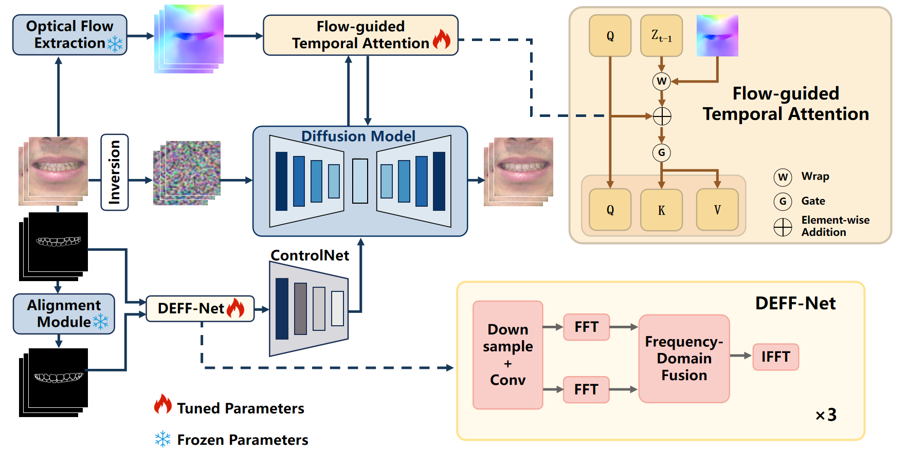

📄Last updated: 2025-09-14
PAPER_TITLE_HERE
1 Affiliation One
2 Affiliation Two
3 Affiliation Three

摘要
在此粘贴你的论文摘要。建议与论文 PDF 保持一致，段落不宜过长，适当加粗关键词以提升可读性。 如果有贡献点，可在摘要末尾用一句话点明：我们的方法在 XX 数据集上取得了 SOTA/competitive 的表现，并在复杂场景中保持了稳定一致的效果。
方法总览（Pipeline）
图 2：Pipeline 细节说明。你可以在此补充模块命名、数据流向、关键设计点（例如：Dual-Encoder、Flow-Guided Attention、Loss 设计等）。
视频演示
下方为两个核心演示视频。支持本地 .mp4 文件或嵌入 YouTube（见注释）。
演示视频 A
演示视频 B
视频建议：使用 H.264 编码（mp4），宽度 1280 或 1920，码率 4–8 Mbps，带封面图以提升加载体验。
引用（BibTeX）
@article{YourKey2025,
title = {PAPER_TITLE_HERE},
author = {Author A and Author B and Author C},
journal = {Journal / arXiv preprint arXiv:XXXX.XXXXX},
year = {2025}
}补充说明（可选）
- 数据与模型下载、复现实验指引、许可证信息等可以放在这里或另起页面。
- 如需多语言：可在导航加入“English / 中文”切换，并提供两个版本的页面。